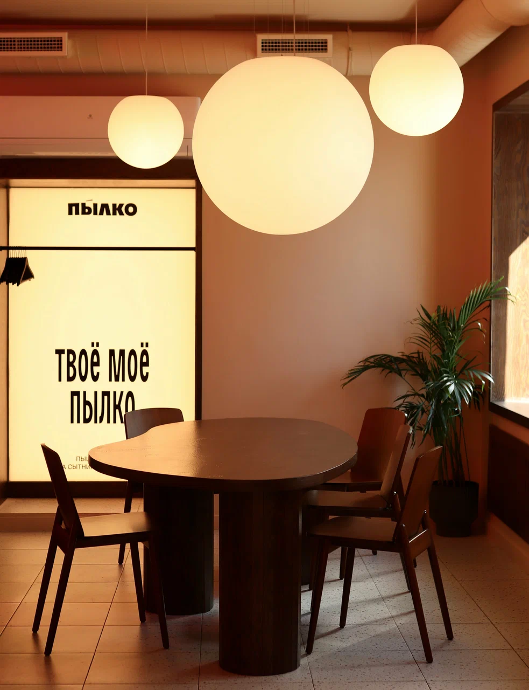
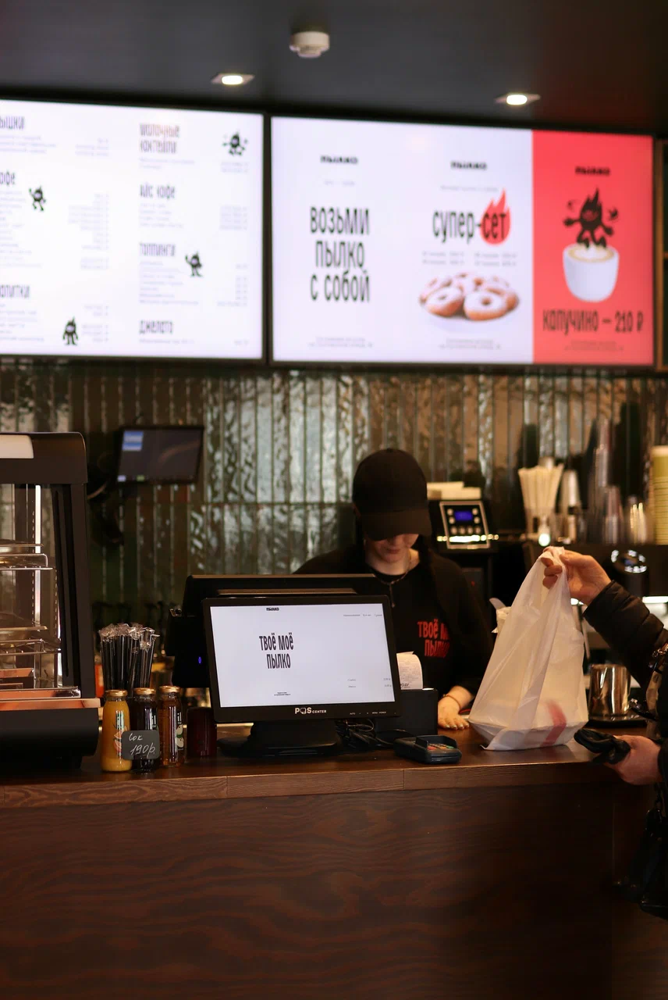
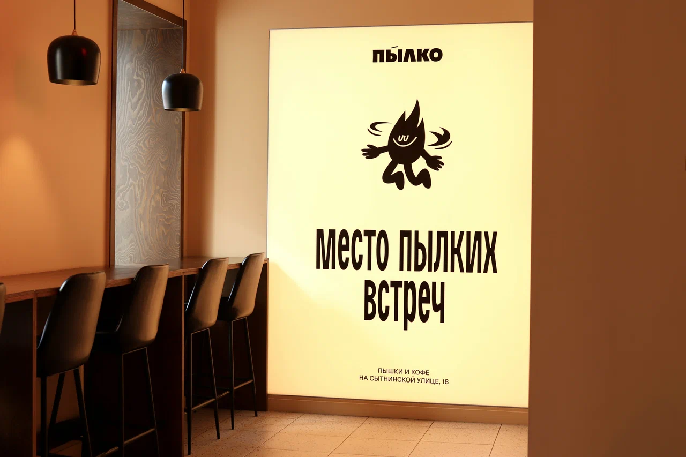
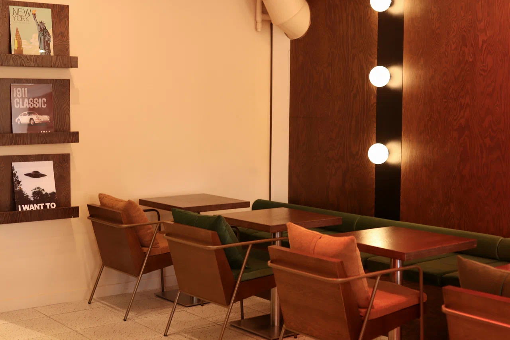
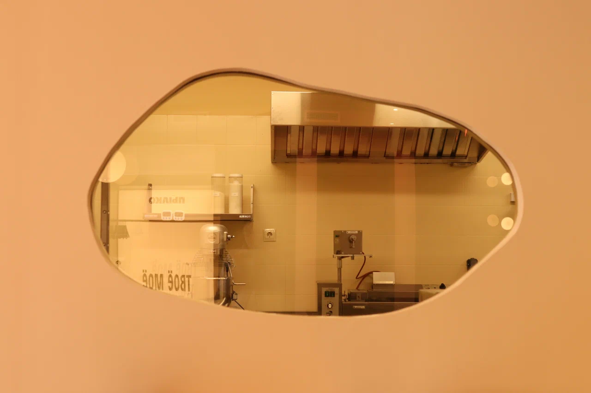

главный продукт
Пышки крупным планом
Еда должна выглядеть аппетитно и просто. Для такой точки одна хорошая фотография работает лучше длинного описания.

Не продавать сотни карточек товаров, а быстро передавать ощущение места: вот стиль, вот еда, вот интерьер, вот меню, вот где вы находитесь.
Еда должна выглядеть аппетитно и просто. Для такой точки одна хорошая фотография работает лучше длинного описания.

Стаканы, шрифты, фирменные фразы и цвета нужно вытаскивать на сайт — в этом и есть характер места.

Люди запоминают не только меню, но и само пространство. Это помогает захотеть зайти именно сюда.
Визуально здесь лучше работает смесь постерной подачи, теплого интерьерного фото и короткой навигации. То есть сайт должен ощущаться почти как продолжение их фирменных плакатов внутри заведения.



Для маленького кафе/пышечной контакты не должны быть скучной служебной страницей. Это должен быть компактный, полезный и красивый блок с адресом, графиком, кнопкой маршрута и соцсетями.
Открыть маршрут в Яндекс Картах, показать время работы, дать ссылку на Telegram / Instagram / VK — этого достаточно.